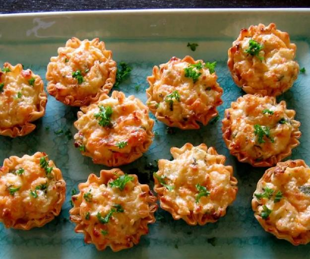

King Crab Appetizers
These crab tartlets have long since been a family favorite and are requested often at holiday get togethers.

Mmmmm...crabby!
Ingredients
- 2 (12 ounce) packages refrigerated biscuit dough
- 1 (8 ounce) package cream cheese, softened
- 1 (6 ounce) can crab meat, drained
- 2 tablespoons mayonnaise
- 2 tablespoons grated Parmesan cheese
- ½ cup shredded Cheddar cheese
- 2 tablespoons thinly sliced green onion
- 1 teaspoon Worcestershire sauce
- 1 pinch paprika
Steps
- Preheat oven to 375 degrees F (190 degrees C). Lightly grease 12 tartlet pans.
- Divide rolls in half and press into the prepared tartlet pans. Set aside.
- In a large bowl, combine cream cheese, crab, mayonnaise, Parmesan cheese, Cheddar cheese, green onions and Worcestershire sauce. Spoon 1 teaspoon of mixture into tarts and garnish with paprika.
- Bake at 375 degrees F (190 degrees C) for 15 to 20 minutes, or until light brown. These freeze wonderfully. Just reheat before serving.